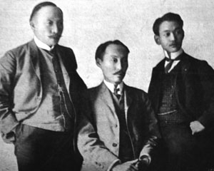

특사
헤이그 특사 사건( - 特使 事件, 문화어: 헤그 밀사 사건)은 1907년 고종이 당시 개신교 감리교회의 지원을 받아 비밀리에 네덜란드 헤이그에서 열린 제2회 만국평화회의에 특사 이준, 이상설, 이위종을 파견하려 하였던 사건이다.
헤이그 특사 사건( - 特使 事件, 문화어: 헤그 밀사 사건)은 1907년 고종이 당시 개신교 감리교회의 지원을 받아 비밀리에 네덜란드 헤이그에서 열린 제2회 만국평화회의에 특사 이준, 이상설, 이위종을 파견하려 하였던 사건이다.
